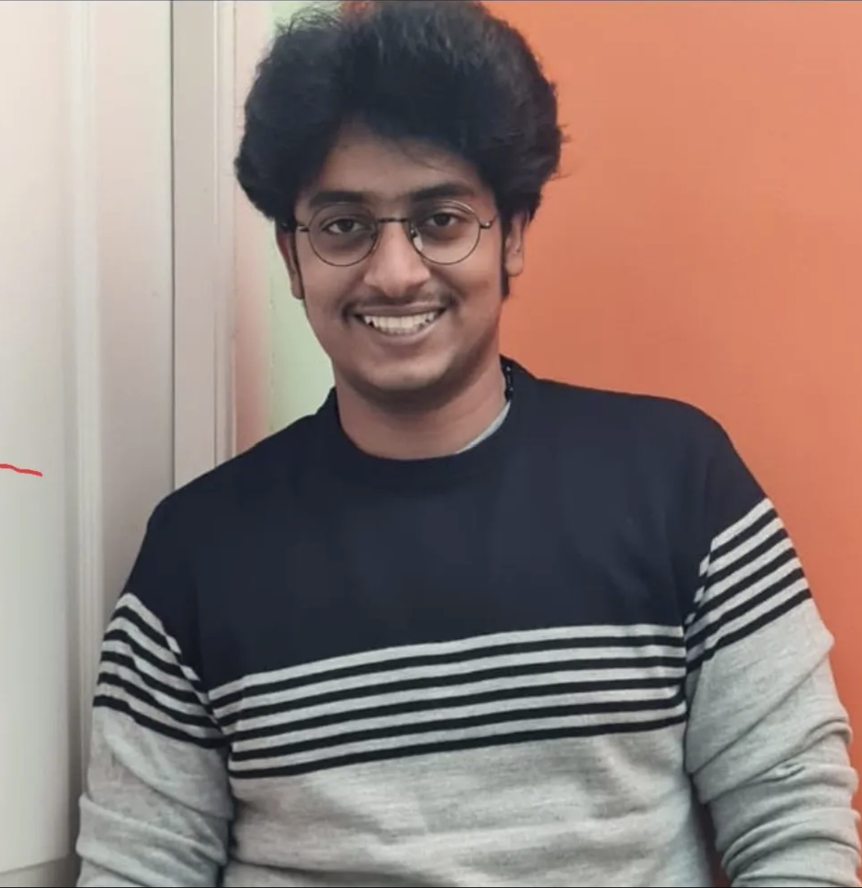

03
Team
Department of Computer Science, Virginia Tech.




Placeholder tagline — one line about the project goes here.
What the project does and why it matters.
Machine-learning intrusion detection systems typically score each network flow on its own, as an independent feature vector. That view discards the network's communication structure, which is exactly where many attacks become visible: a port scan, a DDoS flood, or lateral movement is defined by a pattern spread across many hosts rather than by any single connection.
This project models hosts as nodes and flows as attributed edges, turning detection into an edge classification task solved with a graph neural network. We build time-windowed flow graphs from two standardized NetFlow datasets, NF-UNSW-NB15-v2 and NF-CSE-CIC-IDS2018-v2, implement an edge-aware GNN based on E-GraphSAGE, and compare it against Random Forest, XGBoost, and MLP baselines under identical, leakage-free temporal splits. Because both datasets share a feature schema, we also train on one network and test on the other, a cross-dataset setting the NIDS literature usually omits.
A large language model layer then converts each flagged flow and its local graph context into a human-readable alert, surfaced through an interactive dashboard. Evaluation reports macro and per-class F1 rather than accuracy, reflecting the severe class imbalance inherent to intrusion data.
Flow-level classifiers discard relational structure, so coordinated attacks hide inside individually unremarkable connections.
Edge-aware GNN classification over time-windowed host graphs, with tabular baselines as controls and an LLM layer for explanation.
Better recall on rare attack classes, interpretable alerts, and a measured answer on how detection transfers between networks.
Interim results, milestones reached, and contributions from each member.
Updated experiments, evaluation results, and remaining work.
Complete methodology, experiments, results, and conclusions.
Final slide deck and the one-page project summary.
Walkthrough of the detection pipeline and the results.
Department of Computer Science, Virginia Tech.
